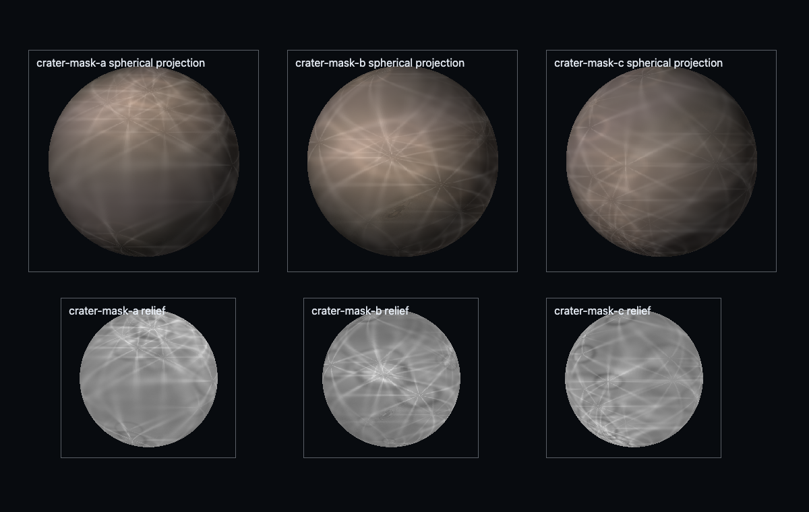
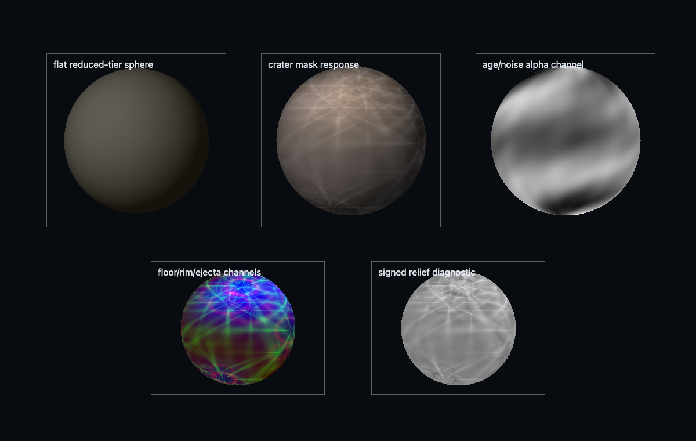
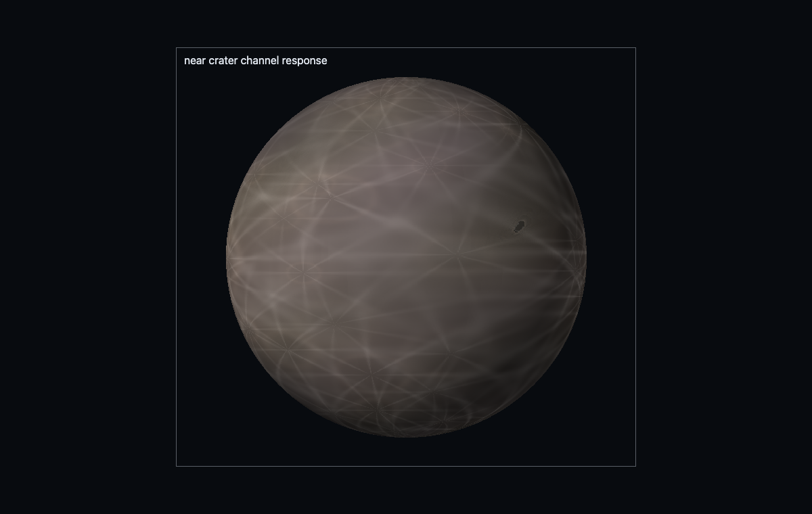

Validation gallery
Evidence frames produced by this skill's validation contract.




Skill Pack / Procedural Content / Procedural Planets
Author high-performance procedural planetary bodies in latest Three.js with WebGPURenderer, TSL, NodeMaterial, cube-sphere quadtree LOD, GPU displacement, coupled crater/biome/climate fields, analytic normals, altitude LOD, and atmosphere handoff from orbit through close approach.
The planet is a cube-sphere: six quadtree faces whose vertices project to the sphere, displaced by a height field composed of crater, mountain, and biome causes:
$$\mathbf p' = \hat{\mathbf p}\,\big(R + h(\hat{\mathbf p})\big)$$Quadtree LOD splits a patch when its projected screen error exceeds a threshold — geometric error over distance:
$$\tau = \frac{e_{patch}}{d}\cdot\frac{w_{screen}}{2\tan(\phi/2)} > \tau_{max} \Rightarrow \text{split}$$Normals come analytically from the height gradient in the tangent frame rather than post-hoc geometry differencing: $\mathbf n \propto \hat{\mathbf p} - \nabla_{\!s} h$, keeping shading stable across LOD seams. Craters are radial profiles $h_c(r) = f(r/r_c)$ with rim uplift and floor flattening, summed with amplitude-sorted dominance so overlaps read as impact history.
Evidence frames produced by this skill's validation contract.



Shipped inside the skill folder — each is a working WebGPU/TSL scene or harness you can run and screenshot.
The complete SKILL.md as loaded by agents — verbatim, rendered.
Build a planet as a streaming cube-sphere quadtree whose visible patches are displaced by one shared TSL field bundle. The same planet-space causes must drive geometry, normals, color, roughness, biome masks, crater topology, climate, water/ice identity, diagnostic views, and atmosphere handoff.
Canonical implementation contract: examples/webgpu-quadtree-planet/.
Run node examples/webgpu-quadtree-planet/validate-planet.mjs after edits.
Legacy WebGL implementation (deprecated, do not extend): examples/procedural-planet-surface/planet-system.js and examples/procedural-planet-surface/terrain-field.js.
WebGPURenderer from three/webgpu, MeshStandardNodeMaterial or
MeshPhysicalNodeMaterial, and TSL from three/tsl.surfaceDirection attribute and treat it as the canonical
planet coordinate.Fn field functions for displacement, material causes,
and diagnostics. Reuse the same functions in vertex displacement, surface
material nodes, and compute passes.renderer.compute() or renderer.computeAsync()
to fill StorageBufferAttribute patch data, parity sample buffers, optional
indirect dispatch data, and cached min/max bounds.$threejs-sky-atmosphere-and-haze.RenderPipeline with node passes for the final stack. Prefer built-in
TRAANode, GTAONode, BloomNode, CSMShadowNode, and TileShadowNode
when they cover the need; custom nodes must beat or extend them.Read references/planet-field-and-atmosphere-systems.md for the complete field contract, quadtree LOD policy, parity harness, crater model, material assembly, atmosphere handoff, diagnostics, and performance budgets.
Initialize the renderer before allocating compute or storage resources:
await renderer.init();
const tier = renderer.backend.isWebGPUBackend ? "full" : "reduced";
Use budgets as design inputs, not after-the-fact measurements:
| Target | Patch vertices | Active patches | Compute | Draws | Planet cost |
|---|---|---|---|---|---|
| desktop discrete | 128-257 per side near camera | 300-900 | 2-5 dispatches/frame, dirty patches only | 150-500 | 2.0-4.0 ms |
| desktop integrated | 65-129 per side | 120-360 | 1-3 dispatches/frame | 80-220 | 3.0-6.0 ms |
| mobile WebGPU | 33-65 per side | 60-160 | 0-2 dispatches/frame, mostly cached | 40-120 | 4.0-8.0 ms |
Keep the far field mostly static. Rebuild only dirty patch rings, body-identity changes, or camera-threshold crossings. Store patch metadata compactly: center/radius/error/min/max in one storage record per patch, and avoid per-frame CPU readback except explicit parity tests.
SRGBColorSpace.NoColorSpace/linear data.HalfFloatType until the single tone-map owner.RenderPipeline.outputColorTransform or an explicit renderOutput() node.
Materials and effects must not double-convert.Validate at fixed cameras and at least three seeds:
$threejs-sky-atmosphere-and-haze.Use $threejs-choose-skills for multi-system preflight when planets are part of
a larger scene. Use $threejs-procedural-fields for reusable field bundles
without a complete body, $threejs-procedural-materials for standalone
material authoring, $threejs-ambient-contact-shading for custom GTAO
work beyond the built-in node, $threejs-scalable-real-time-shadows for
large-world shadow policy, $threejs-image-pipeline for shared gbuffer,
velocity, and output ownership, $threejs-visual-validation for screenshot
and GPU proof, $threejs-exposure-color-grading for metering and tone-map
ownership, $threejs-water-optics for water volume optics, $threejs-volumetric-clouds
for cloud volumes, $threejs-rain-snow-and-wet-surfaces for weather envelopes
and precipitation masks, $threejs-compatibility-fallbacks only for explicit
teaching on how to apply fallback when WebGPU is unavailable, and
$threejs-sky-atmosphere-and-haze for scattering
independent of planet generation. This skill owns the coupled planetary surface
and its LOD/parity architecture.